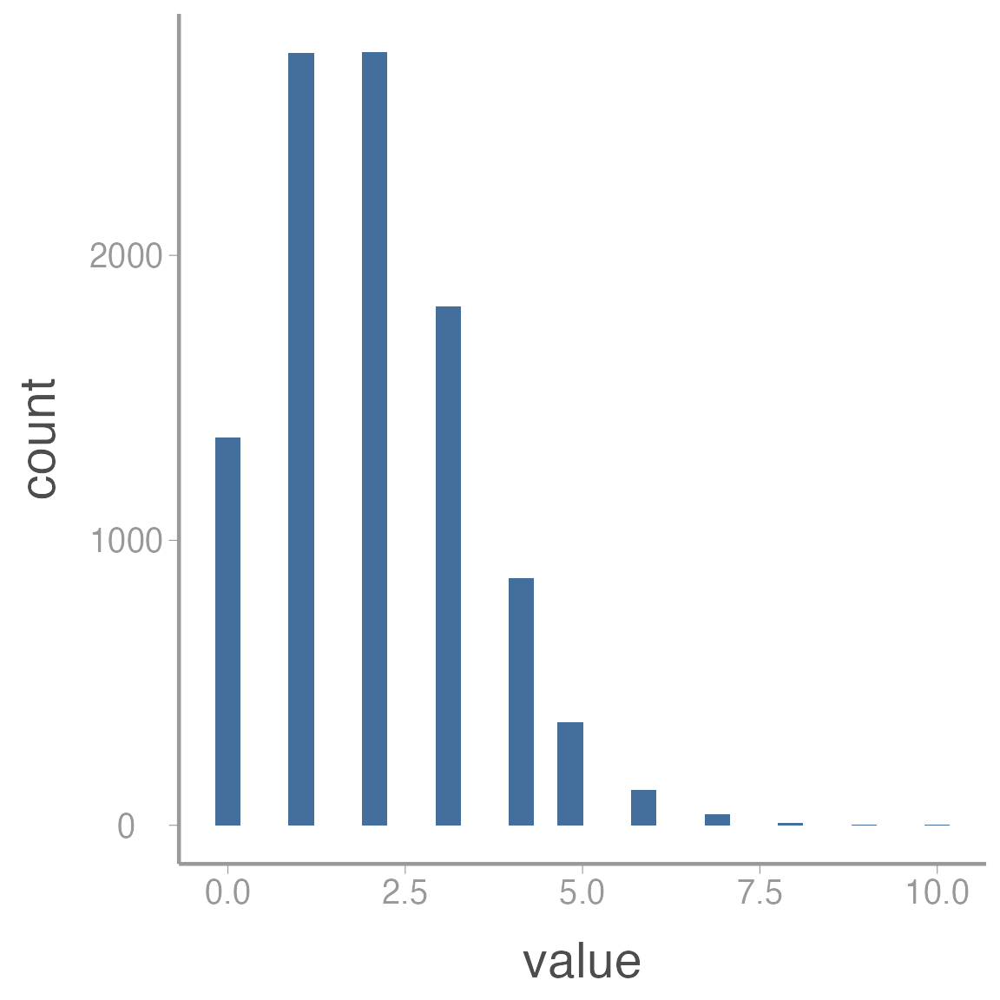
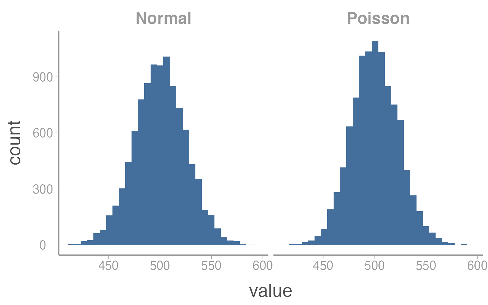
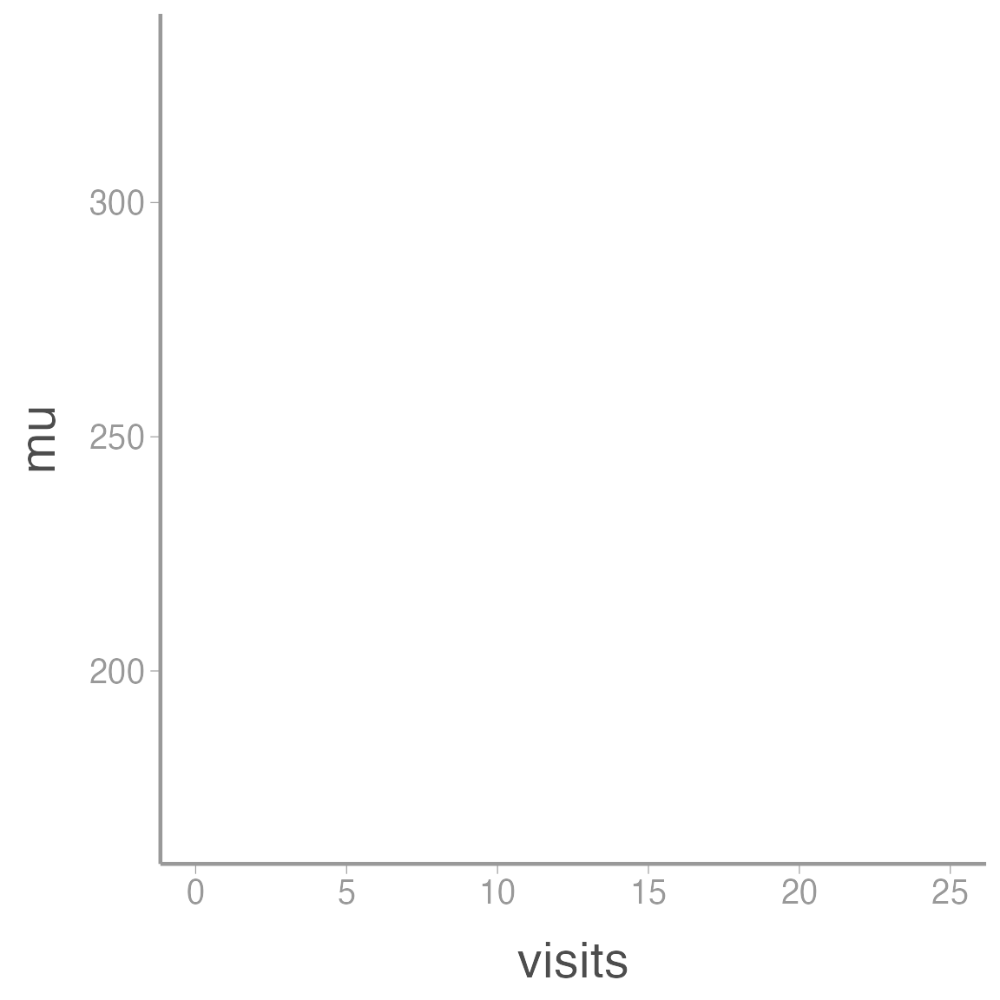
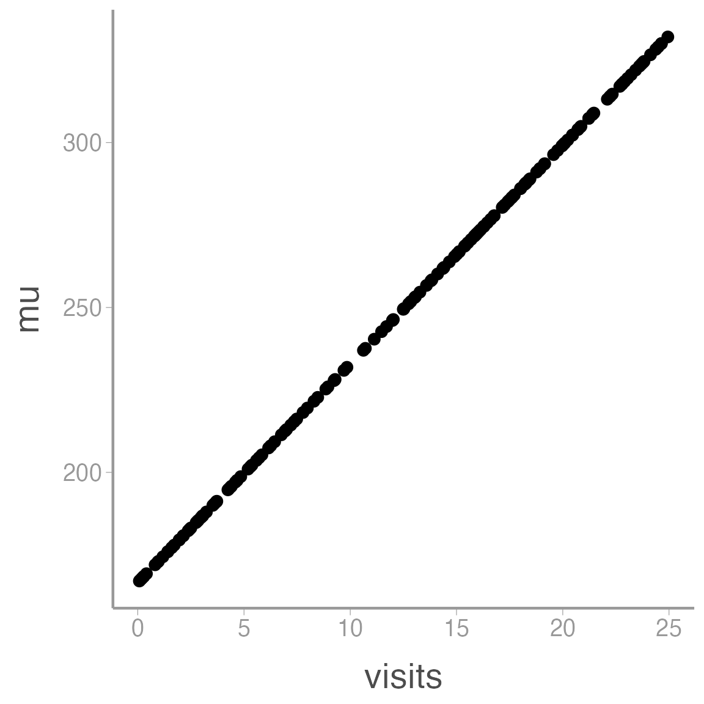
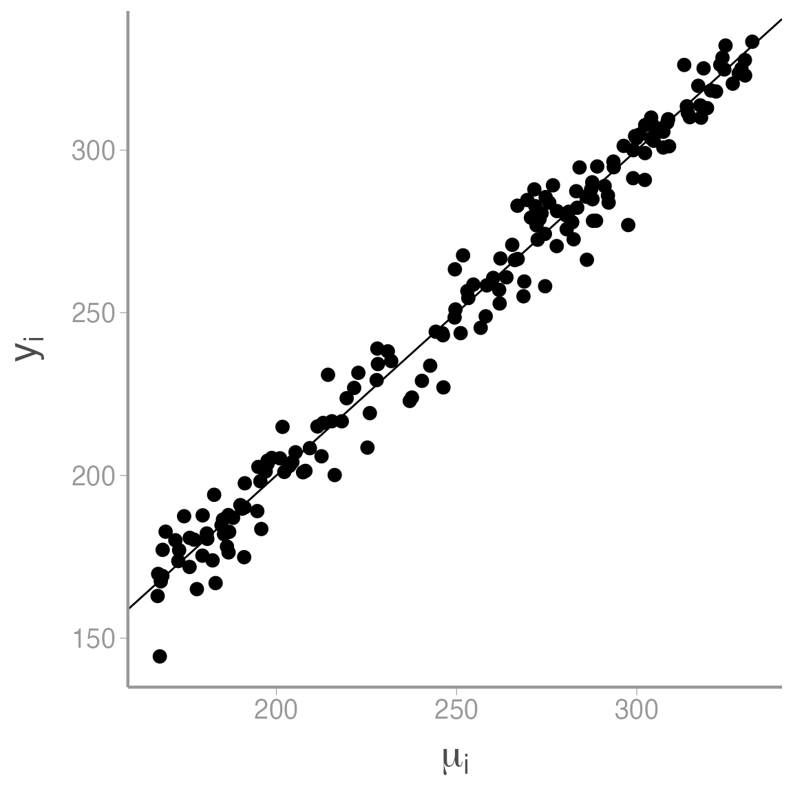

simulation.RmdIn this activity, we simulate data that will later be used to verify a simple Metroplis sampler to estimate the parameters of a linear regression model.
Simulating data involves many of the same taks involved in preparing raw data for analysis. Many of the core principles of so called “data wrangling” are embodied by the tidyverse, a family of packages created to make tidying, manipulating, and visualizing data and model output more intuitive and consistent. Throughout this semester, we will focus on using several of the tidyverse packages to create reproducible data wrangling scripts.
Use of the tidyverse is somewhat controversial and it is worth noting that everything we will do in this lab can be done using base R or non-tidyverse packages. Nonetheless, I find the tidyverse useful because it is opinionated. The developers of the tidyverse have spent a great deal of time thinking about how data should be stored, manipulated, and visualized and they have created an entire ecosystem of functions built around these principles. Using the tidyverse isn’t so much about the tools themselves as it is about thinking about the structure and manipulation of data. For better or worse, focusing on consistent application of these principles is not something base R encourages.
Objectives
Simulate data with known values to verify sampler results using reproducible code
R functions used in this exercise:
Data simulation is a technique for generating random data from stochastic processes with known parameters. Although not framed as “data simulation”, we have already done this several times this semester. For example,
x <- rnorm(100, 3, 0.75)is a simple data simulation to generate random samples from a normal distribution with known mean (\(\mu=3\)) and variance (\(\sigma^2=0.75^2 = 0.5625\)).
In this exercise, we’ll learn about simulating data under more slightly complex models that are similar to the ones you might use to analyze your data. For example, imagine a simple single-season occupancy model with the probability of occupancy \(\psi=0.75\) and detection probability \(p=0.4\). In other words1:
\[z_i \sim Bernoulli(\psi)\]
\[y_i \sim Bernoulli(z_i \times p)\]
We can simulate a data set from this model using a few lines of R code:
nSites <- 100 # Number of sites
nVisits <- 3
psi <- 0.75 # Occupancy probability
p <- 0.4 # Detection probability
z <- rbinom(n = nSites, size = 1, prob = psi) ## Generate true state of each site;
## nb Bernoulli = binomial with size = 1
y <- rbinom(n = nSites*nVisits, size = 1, prob = z * p) ## Generate observations
y <- matrix(y, nrow = nSites, ncol = nVisits)With those seven lines of code, we now how a fake data set that could be fed into an occupancy model to estimate \(\psi\) and \(p\).
At first, it may seem strange to generate a fake data set just so we can run it through a modeling exercise to get answers we already know. But data simulation is a powerful technique in your toolbox as an ecological modeller. There are a number of reasons data simulation is useful2:
Thruth is known: Usually when we apply a model to data, we don’t know the true parameter values that generated the data. In this case, you may be able to fit the model but you’ll never know if it got the right answer. With simulated data, you can check whether your model returns the known parameter values. This is a useful way to make sure you code is doing what you think it’s doing.
Sampling error: As we already learned, sampling error is an inherent part of any ecological analysis. The noise that results from sampling error makes it harder to detect the true signals in our process model. With real data, you only have a single data set, which makes it hard to understand the effect of sampling error on your inference. With simulated data, you can generate hundreds or even thousands of data sets from the same process/observation models, allowing you to observe the effects of sampling error directly.
Check characteristics of estimators: Related to point 1, with a complex model and just a single data set it’s difficult to determine whether the estimators you are using are well-behaved; that is, do they return estimates that are unbiased and precise. With simulated data, you can directly quantify these properties.
Power analysis: By varying the effect sizes and sample sizes in your simulated data, you can easily perform power analyses. Using simulated data in this way can be very useful for designing field studies or helping to interpret inferences after data has been collected and analyzed.
Check identifiability/estimability of parameters: In Bayesian models, we can always obtain posteterior distributions for every parameter in our model. However, these posteriors are not always useful. In some cases, our data may provide little-to-no information about the value of a parameter and therefore the posterior distribution for this parameter will simply be determined by the prior. This lack of identifiability may be caused by instrinsic properties of our model (for example, if two parameters are completely confounded such that different combinations of parameter values have the same likelihood) or because our data do not provide enough information to estimate all parameters in the model (for example, a regression model with dozens of predictors but few observations). Although there are rigorous methods for testing instrinsic identifiability, this task can be extremely difficult for complex hierarchical models. Simulated data allow you to check whether all parameters in your model can be estimated by generating replicate data sets that have the same properties (sample size, etc) as your data.
Check robustness to violations of model assumptions: All models have assumptions about how the data were generated. These assumptions stem from the way we formulate the process and observation models. Of course, most assumptions will be violated to some degree in real data sets. With simulated data sets, we can generate data that we know violate the assumptions of the model in one or more ways (e.g., generating heterogeneous survival probabilities for a model that assumes constant survival). By comparing the parameters estimates from these “mis-specified” data sets, we can gauge the degree to which our inferences are sensitive to violations.
Better understand your model: One good way to test whether you really understand your model is to see if you can write the code to simulate data under the model. In many cases, this exercise will uncover misunderstandings or lack of understanding about what the model is actually doing. Simulating data is a good way to make sure you understand what each parameter in your model actually represents. If you can simulate data from each part of the model, chances are you can also figure out why your model may not be working the way you think it does. In short, simulating data is a great way to develop a deeper understanding of your model.
In this exercise, we will simulate and visualize data generated under a very general process model: a linear regression. Because I’m probably too guilty of being animal focused, we will assume the response variable of the model are counts of the number of seeds produced by the flowers of a rare, endangered orchid. As ecologists studying this orchid, we want to know whether seed production is related to the number of visits by the orchid’s specialist pollinator. Perhaps if it is, we can increase the growth rate of the orchid population by boosting abundance of the pollinator (assuming the number of visits is a function of pollinator abundance).
So we hypothesize that seed number will increase linearly with pollinator visition. This hypothesis can then be translated into a process model:
\[y_i = \alpha + \beta * x_i + \epsilon_i\] \[\epsilon_i \sim Normal(0, \sigma^2)\] where \(y_i\) is the number of seeds counted in flower \(i\) and \(x_i\) is the number of pollinator visits. For simplicity, we will assume that we record both \(y_i\) and \(x_i\) without error. In this model, \(\alpha\) and \(\beta\) are regression coefficients that govern the relationship between seed counts and visitation and \(\epsilon_i\) is a normally distribution error term. You may recognize this as a basic linear regression model with a single covariate \(x\).
Choosing a probability distribution to describe seed counts
Earlier in the semester, we discussed the Poisson distribution as the default distribution for data that have to be positive integers (e.g., count data). However, in this case, our choice of a linear regression implies normally distributed data. Is this choice justified?
First of all, remember that a linear model is composed to two parts:
\[response = deterministic\; part+stochastic\; part\]
The distributional assumptions of a linear model refer to the residuals (the \(\epsilon_i\)’s). That is, we assume that there is stochastic error in the response variable (\(y_i\)) and this error is equally likely to produce values that are larger or smaller than the value predicted by the deterministic portion of the model (\(\alpha + \beta * x_i\)).
For small counts, the Poisson distibution is asymetrical, meaning that we are more likely to generate values that are larger than the mean than smaller than the mean. You can see this clearly in the histogram below, which was generated from \(Poisson(\lambda = 2)\):

In this case, assuming the error terms are normally distribution would likely be inappropriate. However, as counts get larger, the Poisson distribution starts to appear more “normal”:

In this case, \(\mu = \lambda = 500\). So as counts get bigger, there will be very little difference in the results of a linear regression or a Poisson GLM.
***
Hopefully you have already created a main directory for this course when you started the homework assignment on choosing priors. If you have not already done so, create a sub-directory of that folder called data.
For this exercise, create a new script and add it to whatever sub-directory you will use to store analysis scripts (alternatively, you could add this script to the data or raw-data folders since we’ll use it to create data. Just use whatever system makes most sense to you). In the next section, copy the code from the markdown file into this script.
The first step to simulating data is to set the fixed values that are needed to generate the stochastic data. This usually includes the sample size, covariate and parameter values and any other fixed value relevant to the analysis. In this case, we’ll first set the number of flowers that we counted seeds from:
N <- 175 # Number of flowersNext, we need to generate the covariate values, in this case pollination visits. We’ll store these values in a data frame and assume the number of visits ranges from 0 to 25:
sim_df <- data.frame(visits = runif(N, 0, 25)) # Number of pollination visitsA common task during data preparation is adding new variables that are derived from variables in the raw data. In our example, we might want to add a new variable with scaled values of the covariate. In most analyses, it is good practice to scale covariate values so they have a mean of 0 and do not extend too far above and below 0 (very large values (positive or negative) can create numerical issues when fitting models). So next we center and scale the visit covariate (we’ll do it manually but it could also be done using the built-in function scale() or by simply simulating data from a normal distribution in the first place).
In the tidyverse, the workhorse of adding new variables in dplyr::mutate():
You can check that the covariate now has mean = 0 and sd = 1.
NOTE
It can sometimes be confusing to know which functions come from which packages (or to know which function R will default to using). For this reason, it’s good practice to get in the habit of using the package::function() syntax, as we did for mutate() above. Using this syntax makes explicit which package/function you intend to use which makes your code easier for other to understand and reduces the potential for errors. As a benefit, you can stop using library(package) at the beginning of each script.
Finally, we need to set the parameter values for the regression models. This is where understanding what each parameter represents is very helpful. For example, \(\alpha\) is the expected number of seeds when the covariate has a value of 0 (because we centered visits, we interpret \(\alpha\) to be the expected number of seeds at the mean number of visits):
alpha <- 250 # Expected number of seeds at mean number of visitsNow we set \(\beta\) coefficient. We have already said the \(\beta\) is positive (seed count increases with visits). All that’s left is to decide a specific value. Remember that we interpret \(\beta\) as the additional number of seeds for 1 sd increase in the number of visits.
beta <- 50 # Effect of visits on seed countTo generate the simulated seed counts for each flower, we first have to calcuate \(\mu_i\), the expected seeds for each flower. We get these values by simply plugging in the observed visition values for each site to our linear model:
\[\begin{bmatrix} \mu_1 \\ \mu_2 \\ \mu_3 \\ .\\ .\\ .\\ \mu_N \end{bmatrix} = \begin{bmatrix} 1 & visits_1\\ 1 & visits_2\\ 1 & visits_3\\ . & .\\ . & .\\ . & .\\ 1 & visits_N \end{bmatrix} \times \begin{bmatrix} \alpha\\ \beta \end{bmatrix}\]
If you remember matrix algebra, multiplying the covariate matrix by the coefficient matrix is the same as doing:
\[1 \times \alpha + visits_i \times \beta\]
The matrix of predicted responses is called the linear predictor.
Now that we have a refreshed our memory of the basic linear model structure, let’s add the predicted seed counts to the data frame:
sim_df <- dplyr::mutate(sim_df, mu = alpha + beta*visits.c)Whenever you simulate data, it’s very useful to plot your data early and often. It is often difficult to know ahead of time exactly what response values a complex model will produce. Plots are a great way to quickly assess whether the simulation is producing values that are consistent with your domain expertise.
ggplot2
To be consistent with our use of the tidyverse, we will create plots using ggplot2().
The power and flexibility of ggplot2 come from it’s consistent structure. Although a bit overwhelming at first, once you get the hang of it the structure actually makes it quite easy to create highly customized publication-quality graphics. All plots created using ggplot2 use the same underlying structure:
\[\underbrace{ggplot}_{initiate\; plot}(\underbrace{data = df}_{data\;frame},\; \underbrace{aes(x =\; , y = \;)}_{plot\; attributes}) + \underbrace{geom\_line()}_{geometry}\]
The ggplot() function initiates a new plot. In this function, you tell ggplot2 what data frame you will be using for the plot and you tell it how to map attributes of the data to the visual properties of the figures. Attributes are mapped inside the aes() argument. Attributes usually include location (x-axis and y-axis placement), color, size, shape, line type, and many others. In general, each attribute will be mapped to one column of your data frame.
The ggplot() function simply initiates a graph so if you run just that portion of the code you will get a blank graph. We can see that by creating a new plot showing the relationship between elevation (the x-axis of the plot) and predicted abundance (the y-axis):
ggplot(data = sim_df, aes(x = visits, y = mu))
You can see that ggplot created a figure with the correct axes and labels. But no data. That’s because we didn’t tell ggplot what type of geometry to use to represent the data. Geometry refers to the actual type geometric object(s) we want to use to display the data. Common geometries include points (e.g., scatterplot), lines (e.g., timeseries), and bars (e.g., histograms). There are many others. Once we add a geometry, we can see the data:
ggplot(data = sim_df, aes(x = visits, y = mu)) + geom_point()
So we can see that our model predicts seed counts ranging from 164.72 individuals to 344.62. Is that reasonable? Who knows, this is a made up species. But if it wasn’t, this would be a good time to go back and play with different parameter values to generate abundances that are consistent with our domain expertise. For example, the model predicts \(\approx\) 164.72 seeds for a flower with 0 pollination visits. Maybe that makes sense (perhaps the orchids can self-pollinate if necessary) or maybe it doesn’t. If it doesn’t, we need to re-think the model structure.
So far, our simulated seed counts contain no stochastic variation (the visitation covariate is stochastic but given that value, the predicted counts are completely deterministic). To create a realistic data set, we need to add some process variance (\(\sigma^2_p\)). In our example, this requires setting another parameter that controls the amount of process variation.
sigma <- 7.5Now we simply generate random seed counts using the linear predictor and the process variation
### Generate actual abundance for each site
sim_df <- dplyr::mutate(sim_df, y = rnorm(n = N, mu, sigma))
### Plot lambda vs. N
ggplot(data = sim_df, aes(x = mu, y = y)) + geom_point() +
scale_x_continuous(expression(mu[i])) +
scale_y_continuous(expression(y[i])) +
geom_abline(slope = 1, intercept = 0)
As expected, seed count increases with \(\mu\), though you can see the process variation that is added to the model at this stage.
Now that we have a simulated data set, let’s save it so it’s available for future use. There are many ways to save objects in R but one of the most well-behaved is saveRDS().
saveRDS(object = sim_df, file = "data/sim_seed_counts.rds")When you want to use this object in the future, all you have to do is run3:
sim_df <- readRDS("data/sim_seed_counts.rds")Note that \(z_i\) can either be 1 (site \(i\) is occupied) or 0 (site \(i\) is unoccupied) and \(y_i\) can be 1 (species detected at site \(i\)) or 0 (species not detected at site \(i\)). In the second equation, adding \(z_i\) ensures that if the site is unoccupied (\(z_i=0\)) than \(y_i\) has to be 0 also. We’ll learn more about this formulation of occupancy models later in the semester↩
Based on chapter 4 of Kery & Royle Applied Hierarchical Modeling in Ecology↩
Note that with readRDS() you do have to assign the object you are reading to a new object. If you don’t create a new object, readRDS() will simply print the data frame. This has the advantage that you can rename the object something else when you read it in next time.↩